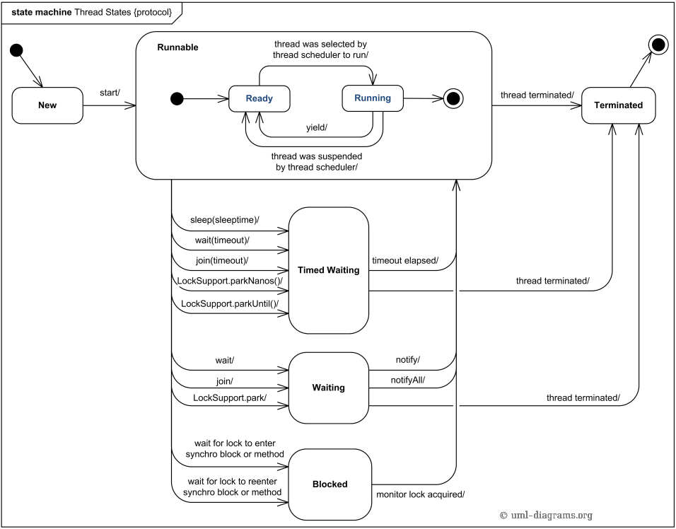
Timed waiting:
Thread.sleep(sleeptime)Object.wait(timeout)Thread.join(timeout)LockSupport.parkNanos(timeout)LockSupport.parkUntil(timeout)
|
|
通常 Thread 写法:
|
|
能够对 Thread.interrupt() 方法做出响应的一些方法:
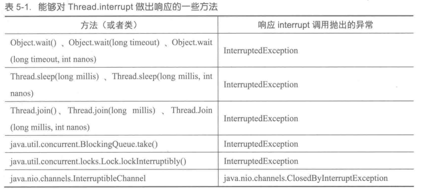
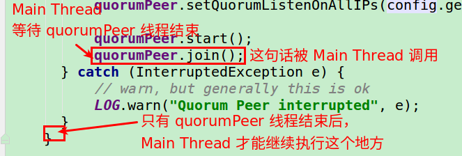
|
|
AtomicInteger vs AtomicIntegerFieldUpdaterThe Java 5 atomic classes also include atomic field updaters. These are essentially used as “wrappers” around a volatile field (primitive or object reference). In truth, these wrappers are used inside the Java class libraries, but probably aren’t used much in user code. But it is worth taking a look at them to see when they could be useful. They are generally used when one or both of the following are true:
An example of the first kind is BufferedInputStream. Every instance of BufferedInputStream contains an internal buffer, defined as a volatile byte array. Generally speaking, BufferedInputStream just needs to refer to this array “normally” for the purpose of reading/writing bytes. However, an atomic get-and-set operation is needed in specific places where the buffer array is replaced (either to grow it or to mark it as null or closed), because closure can occur in 一个不同的线程 to that performing the reads. One option would have been to declare the buffer variable as an AtomicReference to an array, and always get and set the array via this variable. But that would be a bit messy. Instead, a noraml volatile array variable is used, and the class also contains a static AtomicReferenceUpdater as follows:
|
|
The array itself still remains a normal (volatile) variable, and reads and writes from the array can use normal array syntax. But when necessary, via the field updater, an atomic compare-and-set operation can be performed on the volatile variable. Although the updater is static, each instance of BufferedInputStream has its own buffer of course. So when we perform the CAS operation, we need to pass into the updater the actual object whose variable we want to affect:
|
|
This is a call inside a method of BufferedInputStream, so this refers to the particular instance of this class that the method is being called on, and that object’s variable will be affected.
Using atomic field updaters for linked nodes:
Another use for atomic field updaters is to avoid creating 创建大量的原子变量. For example, if we were creating a linked list structure designed for concurrent access, we might want each node to have an atomic variable pointing to the next node in the list. Judicious code can then allow different parts of the list to be updated concurrently. Without atomic field updaters, this would have meant code such as the following:
|
|
In other words, every single node will have an additional AtomicReference object embedded in it. Using an atomic field updater, we can get a performance gain by declaring the ‘next node’ variable as a normal volatile object reference, and then using a field updater (of which we declare a single, static, instance shared by all nodes to access their respective ‘next node’ field):
|
|
As mentioned, atomic field updaters have been used in various places in the Java class libraries.In reality, if you want an efficient currently accessible data structure, it is strongly recommended to use one of the excellent standard implementations such as ConcurrentHashMap, ConcurrentLinkedQueue or (as of Java 6) ConcurrentSkipListMap.
在 Netty 中，AbstractReferenceCountedByteBuf 类使用 AtomicIntegerFieldUpdater 来更新字段 refCnt:
|
|
参考:
使用自定义 ThreadFactory 的好处:
daemon 状态Handler位于 java.util.concurrent.Executors.java 中的内部类 DefaultThreadFactory 的实现:
|
|
一个比较优雅的采用 Builder 模式实现的 ThreadFactory:
【强制】线程资源必须通过线程池提供,不允许在应用中自行显式创建线程。使用线程池的好处是减少在创建和销毁线程上所花的时间以及系统资源的开销,解决资源不足的问题。如果不使用线程池,有可能造成系统创建大量同类线程而导致消耗完内存或者“过度切换”的问题。
【强制】线程池不允许使用 Executors 去创建,而是通过 ThreadPoolExecutor 的方式,这样的处理方式让写的同学更加明确线程池的运行规则,规避资源耗尽的风险。Executors 返回的线程池对象的弊端如下:
1) FixedThreadPool 和 SingleThreadPool: 允许的请求队列长度为 Integer.MAX_VALUE ,可能会堆积大量的请求，从而导致 OOM 。
2) CachedThreadPool 和 ScheduledThreadPool: 允许的创建线程数量为 Integer.MAX_VALUE ,可能会创建大量的线程，从而导致 OOM 。
|
|
|
|
同步器依赖内部的同步队列(一个 FIFO 双向队列)来完成同步状态的管理，当前线程获取同步状态失败时，同步器会将当前线程以及等待状态等信息构造成为一个节点 (Node) 并将其加入同步队列，同时会阻塞当前线程，当同步状态释放时，会把首节点中的线程唤醒，使其再次尝试获取同步状态。
同步队列中的节点(Node)用来保存获取同步状态失败的线程引用、等待状态以及前驱和后继节点。
在获取同步状态时，同步器维护一个同步队列，获取状态失败的线程都会被加入到队列中并在队列中进行自旋；移出队列(或停止自旋)的条件是前驱节点为头节点且成功获取了同步状态。在释放同步状态时，同步器调用 tryRelease(int arg) 方法释放同步状态，然后唤醒头节点的后继节点。
共享式获取与独占式获取最主要的区别在于同一时刻能否有多个线程同时获取到同步状态。以文件的读写为例，如果一个程序在对文件进行读操作，那么这一时刻对于该文件的写操作均被阻塞，而读操作能够同时进行。
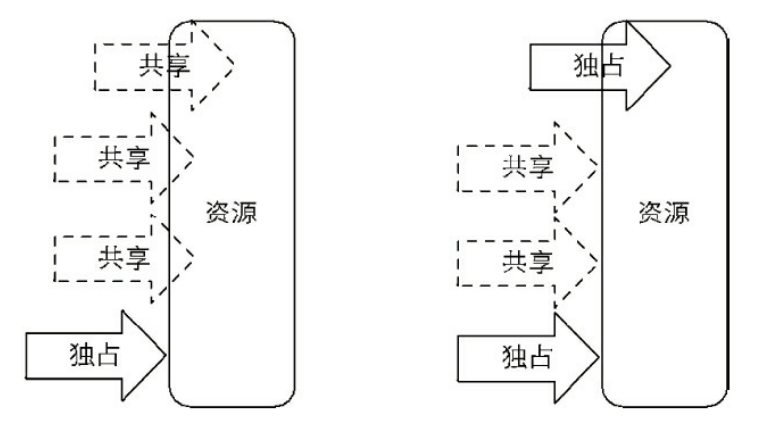
重入锁表示该锁能够支持一个线程对资源的重复加锁，该特性的实现需要解决以下两个问题:
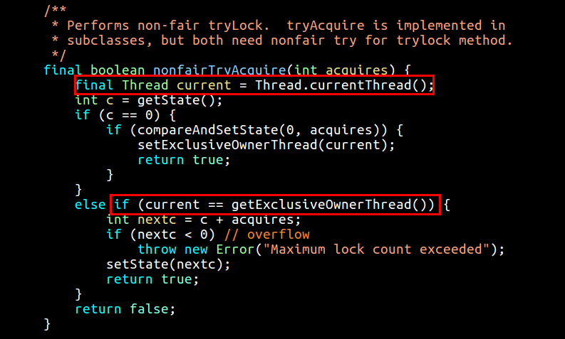
对于非公平锁,只要 CAS 设置同步状态成功，则表示当前线程获取了锁，而公平锁则不同。该方法与 nonfairTryAcquire(int acquires) 比较,唯一不同的位置为判断条件多了 hasQueuedPredecessors() 方法,即加入了同步队列中当前节点是否有前驱节点的判断,如果该方法返回 true ,则表示有线程比当前线程更早地请求获取锁,因此需要等待前驱线程获取并释放锁之后才能继续获取锁。
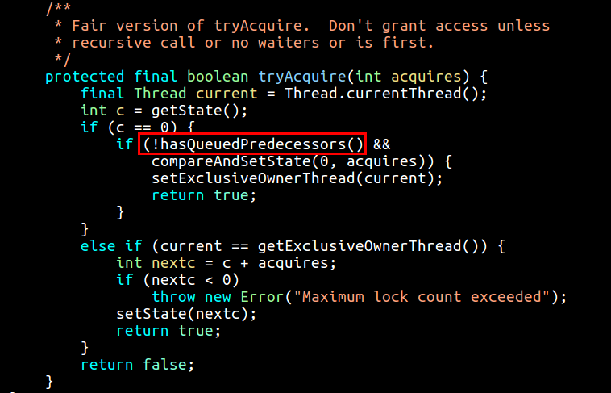
公平性锁保证了锁的获取按照 FIFO 原则, 而代价是进行大量的线程切换。非公平性锁虽然可能造成线程“饥饿”,但极少的线程切换,保证了其更大的吞吐量。
提供的特性:
读写锁同样依赖自定义同步器来实现同步功能,而读写状态就是其同步器的同步状态。回想 ReentrantLock 中自定义同步器的实现,同步状态表示锁被一个线程重复获取的次数,而读写锁的自定义同步器需要 在同步状态(一个整型变量)上维护多个读线程和一个写线程的状态, 使得该状态的设计成为读写锁实现的关键。
如果在一个整型变量上维护多种状态,就一定需要“按位切割使用”这个变量,读写锁将变量切分成了两个部分,高 16 位表示读,低 16 位表示写,划分方式如图所示:
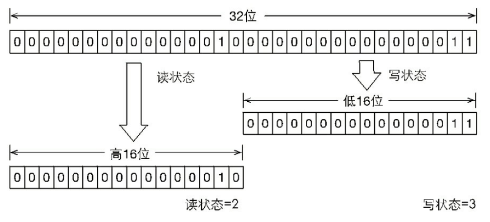
当前同步状态表示一个线程已经获取了写锁,且重进入了两次,同时也连续获取了两次读锁。读写锁是如何迅速确定读和写各自的状态呢? 答案是通过位运算。假设当前同步状态值为 S ,写状态等于 S & 0x0000FFFF (将高 16 位全部抹去),读状态等于 S>>>16 (无符号补 0 右移 16 位)。当写状态增加 1 时,等于 S+1,当读状态增加 1 时,等于 S+(1<<16) ,也就是 S+0x00010000。
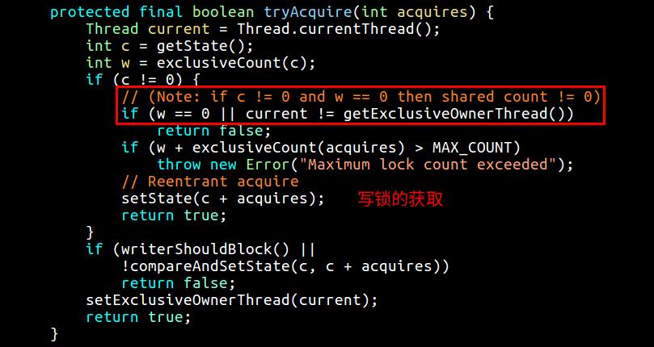
如果存在读锁,则写锁不能被获取,原因在于:读写锁要确保写锁的操作对读锁可见,如果允许读锁在已被获取的情况下对写锁的获取,那么正在运行的其他读线程就无法感知到当前写线程的操作。因此,只有等待其他读线程都释放了读锁,写锁才能被当前线程获取,而写锁一旦被获取,则其他读写线程的后续访问均被阻塞。
锁降级指的是写锁降级成为读锁。如果当前线程拥有写锁,然后将其释放,最后再获取读锁,这种分段完成的过程不能称之为锁降级。锁降级是指把持住(当前拥有的)写锁,再获取到读锁,随后释放(先前拥有的)写锁的过程。
1) 增加和删除的时候，使用 writeLock:
|
|
2) 序列化、读取的时候，使用 readLock:
|
|
当需要阻塞或唤醒一个线程的时候,都会使用 LockSupport 工具类来完成相应工作。LockSupport 定义了一组的公共静态方法,这些方法提供了最基本的线程阻塞和唤醒功能,而 LockSupport 也成为构建同步组件的基础工具。
LockSupport 定义了一组以 park 开头的方法用来阻塞当前线程,以及 unpark(Thread thread) 方法来唤醒一个被阻塞的线程。Park 有停车的意思,假设线程为车辆,那么 park 方法代表着停车,而 unpark 方法则是指车辆启动离开。
有阻塞对象的 parkNanos(Object blocker, long nanos) 方法能够传递给开发人员更多的现场信息。这是由于在 Java 5 之前,当线程阻塞(使用 synchronized 关键字)在一个对象上时,通过线程 dump 能够查看到该线程的阻塞对象,方便问题定位,而 Java 5 推出的 Lock 等并发工具时却遗漏了这一点,致使在线程 dump 时无法提供阻塞对象的信息。因此,在 Java 6 中,LockSupport 新增了上述3个含有阻塞对象的 park 方法,用以替代原有的 park 方法。
任意一个 Java 对象，都拥有一组监视器方法(定义在 java.lang.Object 上)，主要包括 wait()、wait(long timeout)、notify() 以及 notifyAll() 方法，这些方法与 synchronized 同步关键字配合，可以实现等待/通知模式。Condition 接口也提供了类似 Object 的监视器方法，与 Lock 配合可以实现等待/通知模式。Condition 对象是由 Lock 对象(调用 Lock 对象的 newCondition() 方法)创建出来的，换句话说，Condition 是依赖 Lock 对象的。
每个 Condition 对象都包含着一个队列(以下称为等待队列),该队列是 Condition 对象实现等待/通知功能的关键。
在 Object 的监视器模型上,一个对象拥有一个同步队列和等待队列,而并发包中的 Lock (更确切地说是同步器)拥有一个同步队列和多个等待队列:
调用 Condition 的 signal() 方法,将会唤醒在等待队列中等待时间最长的节点(首节点)，在唤醒节点之前，会将节点移到同步队列中:
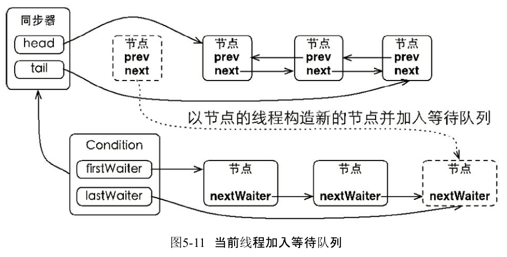
await 方法就是往队列里面添加一个标明当前线程的节点的过程:
|
|
signal 过程就是一个切换状态和队列的过程:
|
|
ConcurrentHashMap 替代了 HashMapCopyOnWriteArrayList 替代同步 ListCopyOnWriteArraySet 替代同步 Set阻塞队列提供了可阻塞的 put 和 take 方法，以及支持定时的 offer 和 poll 方法。如果队列已经满了，那么 put 方法将阻塞直到空间可用；如果队列为空，那么 take 方法将会阻塞直到有元素可用。队列可以是有界的也可以是无界的，无界队列永远都不会充满，因此无界队列上的 put 方法也永远不会阻塞。
BlockingQueue 简化了生产者-消费者设计的实现过程，它支持任意数量的生产者和消费者。
关于 ArrayBlockingQueue 的更多介绍:
| 方法 | 介绍 |
|---|---|
boolean add(E e) |
添加到队尾，满了抛出异常，无阻塞 |
boolean offer(E e) |
添加到队尾，满了返回 false，无阻塞 |
E poll() |
从队头取出，空直接返回 null，无阻塞 |
void put(E e) throws InterruptedException |
添加到队尾，满了阻塞等待 |
E take() throws InterruptedException |
从队头取出，空了阻塞等待 |
boolean offer(E e, long timeout, TimeUnit unit) |
添加到队尾，带有定时的阻塞 |
E poll(long timeout, TimeUnit unit) |
从队头取出，带有定时的阻塞 |
在一些情况下，ConcurrentHashMap 将会使用红黑平衡树 (red-black tree) 而非链表来保存元素。当元素数量大于某个值的时候，使用平衡树可以把最坏情况的性能由 O(n) 提升到 O(log n)。java.util.HashMap, java.util.LinkedHashMap and java.util.concurrent.ConcurrentHashMap 这几个都做了类似的改动。
ConcurrentHashMap 返回的迭代器具有弱一致性，而并非即使失败。size() 返回的结果在计算时可能已经过期了，它实际上只是一个估计值。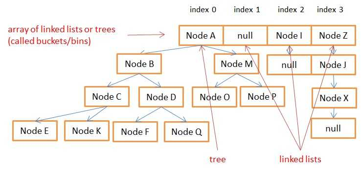
ConcurrentLinkedQueue 是一个基于链接节点的无界线程安全队列,它采用先进先出的规则对节点进行排序,当我们添加一个元素的时候,它会添加到队列的尾部;当我们获取一个元素时,它会返回队列头部的元素。
ConcurrentLinkedQueue 使用场景: 当你需要从多线程中访问队列，但是你不需要等待新元素LinkedBlockingQueue 使用场景: 需要阻塞的队列
调用 poll 方法后一定要判断是否为空:
|
|
DelayQueue 是一个支持延时获取元素的无界阻塞队列。队列使用 PriorityQueue 来实现。队列中的元素必须实现Delayed接口,在创建元素时可以指定多久才能从队列中获取当前元素。只有在延迟期满时才能从队列中提取元素。
DelayQueue 非常有用,可以将 DelayQueue 运用在以下应用场景。
DelayQueue 保存缓存元素的有效期,使用一个线程循环查询 DelayQueue, 一旦能从 DelayQueue 中获取元素时,表示缓存有效期到了。DelayQueue 保存当天将会执行的任务和执行时间,一旦从 DelayQueue 中获取到任务就开始执行,比如 TimerQueue 就是使用 DelayQueue 实现的。延时阻塞队列的实现很简单,当消费者从队列里获取元素时,如果元素没有达到延时时间,就阻塞当前线程。
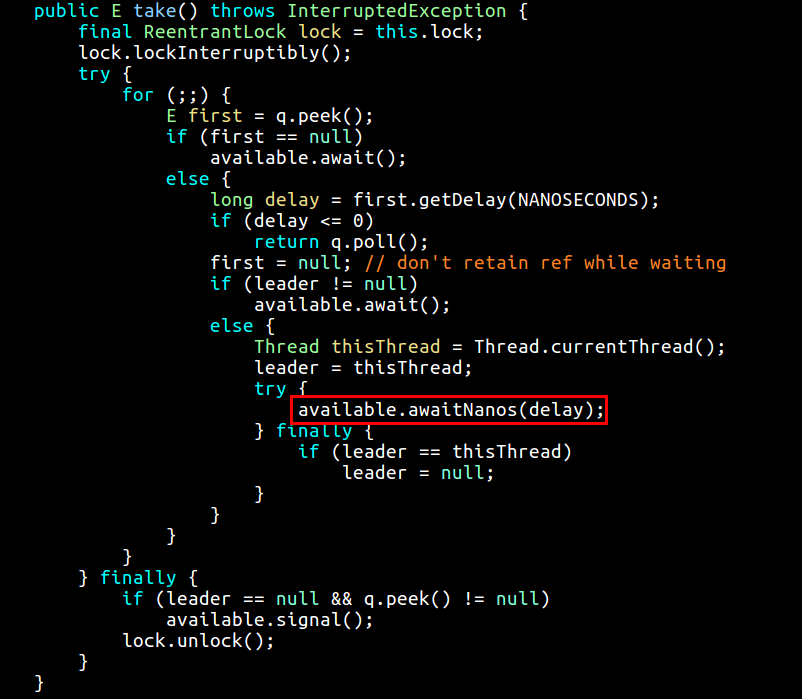
LinkedBlockingQueue 是一个用链表实现的有界阻塞队列。此队列的默认和最大长度为 Integer.MAX_VALUE。
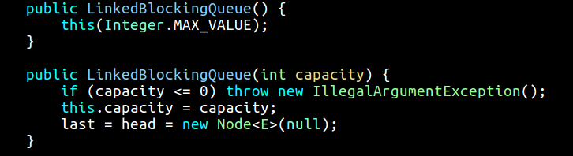
take 如果为空，就会阻塞在 notEmpty 锁上:
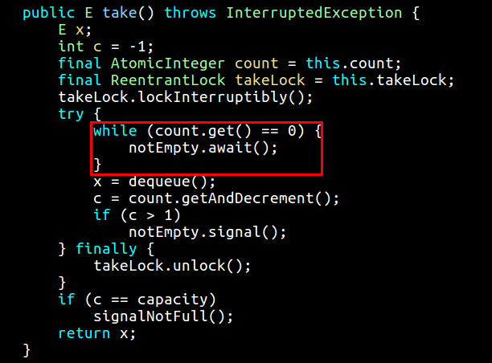
CountDownLatch 允许一个或多个线程等待其他线程完成操作，其实就相当于 thread.join() 方法。
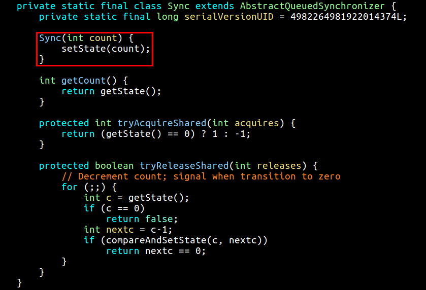
CyclicBarrier 的字面意思是可循环使用 (Cyclic) 的屏障 (Barrier)。它要做的事情是,让一组线程到达一个屏障(也可以叫同步点)时被阻塞,直到最后一个线程到达屏障时,屏障才会开门, 所有被屏障拦截的线程才会继续运行。
CyclicBarrier vs CountDownLatch:
CyclicBarrier 多一个 reset() 方法CyclicBarrier 多一个 getNumberWaiting() 方法CyclicBarrier 多一个 isBroken() 方法CyclicBarrier 有一个构造器 public CyclicBarrier(int parties, Runnable barrierAction) 方法，多个线程到达屏障以后，执行一个 barrierAction 任务CyclicBarrier 强调的是线程互相等待，而 CountDownLatch 强调的是某个线程等待其它一组线程完成CyclicBarrier 必须有 N 个线程来等待，而 CountDownLatch 必须有 N 次调用，不一定有 N 个线程
Semaphore (信号量)是用来控制同时访问特定资源的线程数量,它通过协调各个线程,以保证合理的使用公共资源。
多年以来,我都觉得从字面上很难理解Semaphore所表达的含义,只能把它比作是控制流量的红绿灯。比如××马路要限制流量,只允许同时有一百辆车在这条路上行使,其他的都必须在路口等待,所以前一百辆车会看到绿灯,可以开进这条马路,后面的车会看到红灯,不能驶入××马路,但是如果前一百辆中有5辆车已经离开了××马路,那么后面就允许有5辆车驶入马路,这个例子里说的车就是线程,驶入马路就表示线程在执行,离开马路就表示线程执行完成,看见红灯就表示线程被阻塞,不能执行。
Semaphore 可以用于做流量控制,特别是公用资源有限的应用场景,比如数据库连接。假如有一个需求,要读取几万个文件的数据,因为都是 IO 密集型任务,我们可以启动几十个线程并发地读取,但是如果读到内存后,还需要存储到数据库中,而数据库的连接数只有 10 个,这时我们必须控制只有 10 个线程同时获取数据库连接保存数据,否则会报错无法获取数据库连接。这个时候,就可以使用 Semaphore 来做流量控制。
Exchanger (交换者)是一个用于线程间协作的工具类。Exchanger 用于进行线程间的数据交换。它提供一个同步点,在这个同步点,两个线程可以交换彼此的数据。这两个线程通过 exchange 方法交换数据,如果第一个线程先执行 exchange() 方法,它会一直等待第二个线程也执行 exchange 方法,当两个线程都到达同步点时,这两个线程就可以交换数据,将本线程生产出来的数据传递给对方。
线程的运行机制:
当一条线程的时间片用完后，操作系统会暂停该线程，并保存该线程相应的信息，然后再随机选择一条新线程去执行，这个过程就称为 “线程的上下文切换”。
上下文切换的过程:
如何减少上下文切换？
使用 perf 命令来测量上下文切换的时间:
|
|
最后，业务执行时间长的问题，也可能需要分析一下，看看能不能使用中间件对任务进行拆分和解耦。
ThreadLocalThreadLocal 在使用上有什么需要注意的？在高并发请求的环境下性能如何？会有什么问题？
答：
remove 操作，避免 ThreadLocal 对象越来越大。ThreadLocal 内部使用 HashMap 的原理，key=currentThread，因为 HashMap 是非线程安全的，一定要注意 hashmap.resize 的时候，可能会导致某几个CPU 100%的问题，进而导致应用出现资源耗尽等不可预知的问题。当多个线程访问同一个可变的状态变量的时候。有三种方式解决这个问题:
volatilevolatile 用来确保将变量的更新操作通知到其他线程。当把变量声明为 volatile 类型后，编译器与运行时都会注意到这个变量是共享的，因此不会将该变量的操作与其他内存操作一起重排序。
Final 域final 域能确保初始化过程的安全性，从而可以不受限制地访问不可变对象，并在共享这些对象时无须同步。即使对象是可变的，通过将对象的某些域声明为 final 类型，仍然可以简化对状态的判断，因此限制对象的可变性也就相当于限制了该对象可能的状态的集合。
JMM 未程序中所有的操作定义了一个偏序关系，称之为 Happens-Before 规则。要想保证执行操作 B 的线程看到操作 A 的结果，那么在 A 和 B 之间必须满足 Happens-Before 关系:
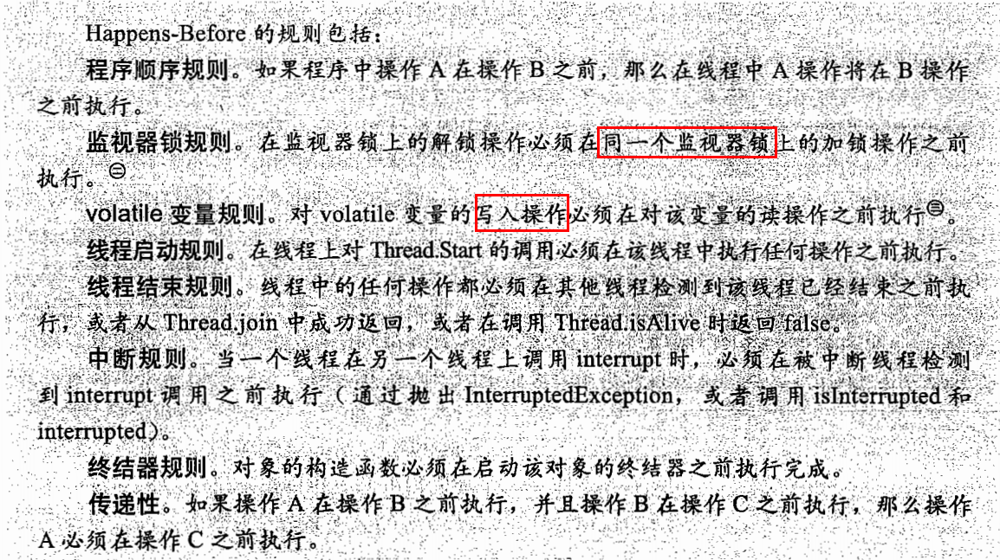
如果两个操作之间缺乏 Happens-Before 关系，那么 JVM 可以对他们进行任意重排序。
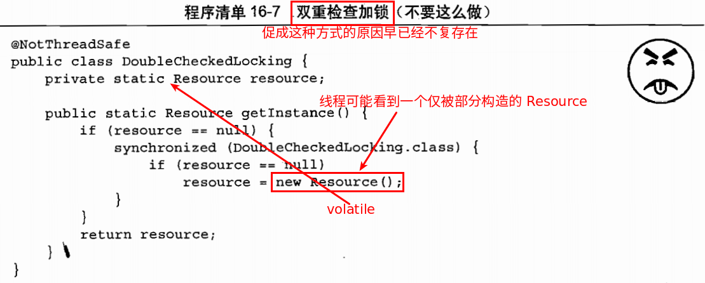
TimerTimerTask 的定时精确性。例如某个周期 TimerTask 需要每 10ms 执行一次，而另外一个 TimerTask 需要执行 40ms，那么这个周期任务或者在 40ms 任务执行完快速连续地调用 4 次，或者彻底 “丢失” 4 次调用。 (取决于它是基于固定速率调度还是基于固定延时来调度)。TimerTask 抛出了一个未检查异常，那么 Timer 将表现出糟糕的行为。它不捕获异常，也不会恢复线程的执行，而是会错误的认为整个 Timer 被取消了。Callable 任务ExecutorCompletionService 将 Executor 和 BlockingQueue 的功能融合在一起:
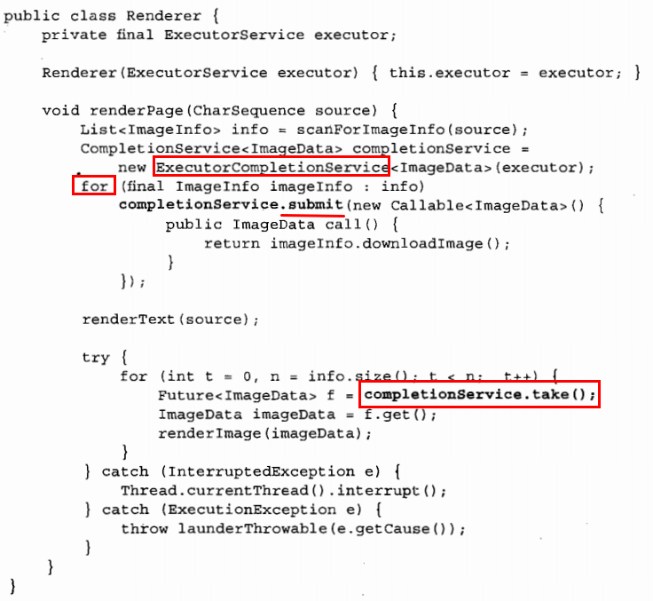
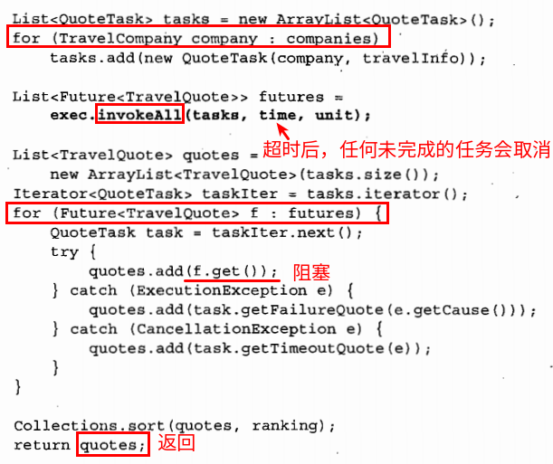
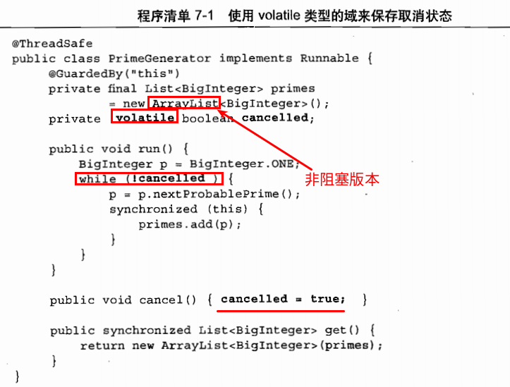
volatile 变量的问题:
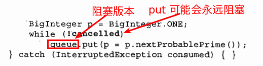
实际上，在取消之外的其它操作中使用中断，都是不合适的，并且很难支撑起更大的应用。
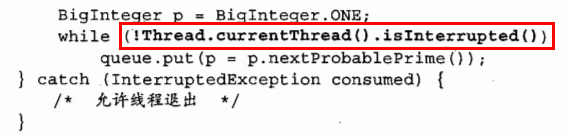
在内置锁中，恢复程序的唯一方法就是重新请程序，而防止死锁的唯一方法就是在构造程序时避免出现不一致的加锁顺序。
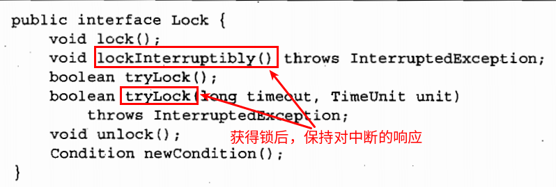
对于计算密集型任务，在拥有 $N_{cpu}$ 个处理器的系统上，当线程池的大小为 $N_{cpu} + 1$ 时，通常能够实现最优的利用率。
对于包含 I/O 操作或者其它阻塞操作的任务，由于线程池并不会一直执行，因此线程池的规模应该更大。
要正确地设置线程池的大小，你必须估算出任务的等待时间和计算时间的比值:
其中:
take 的调用前提条件:
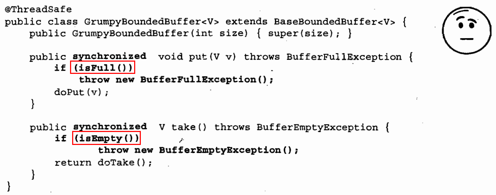
当前提条件失败以后，调用者必须自行处理:
Thread.yield 给调度器一个提示: 现在需要让出一定时间使另一个线程运行。假如正在等待另外一个线程执行工作，那么如果选择让出处理器而不是消耗完整个 CPU 调度时间片，那么可以让整体的执行速度变快。通过轮询与休眠实现简单的阻塞:
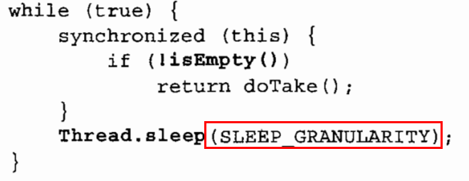
在 take() 出现可用空间的时刻与线程醒来并再次检查的时刻之间可能存在延迟:
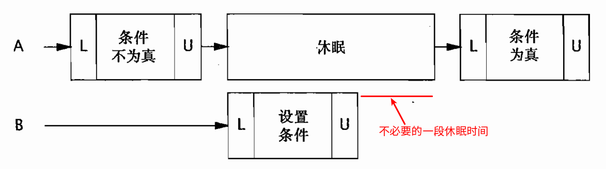
条件队列就好像烤面包机中通知 “面包已烤好” 的铃声。如果你注意听着铃声，那么当面包烤好后可以立刻得到通知。如果没有听见铃声，那么会错过通知消息，但是回到厨房时还可以观察烤面包机的状态，如果已经烤好，就取出面包；否则，再次留意铃声。
在 Java 中每个对象都可以作为一个条件队列，Object 中的 wait, notify 和 notifyAll 方法构成了内部条件队列的 API。
使用 wait 和 notifyAll 比使用 “休眠” 更简单，更高效 (醒来的次数更少)，响应性也更高 (发生特定状态变化时将立刻醒来)。但是需要注意的是，条件队列只是在多个方面进行了优化: CPU 效率、上下文切换开销和响应性等。
如果某个功能无法通过 “轮询和休眠” 来实现，那么使用条件队列也无法实现。
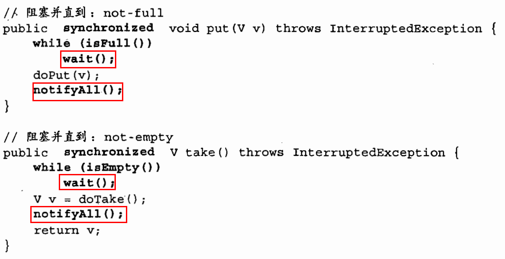
在产品的正式版本中，还应该包括限时版本的 put 和 take ，这样当操作不能在预计时间内完成时，可以因超时而返回。通过使用定时版本的 Object.wait，可以很容易实现这些方法。
|
|
通过一个锁来保护条件谓词:
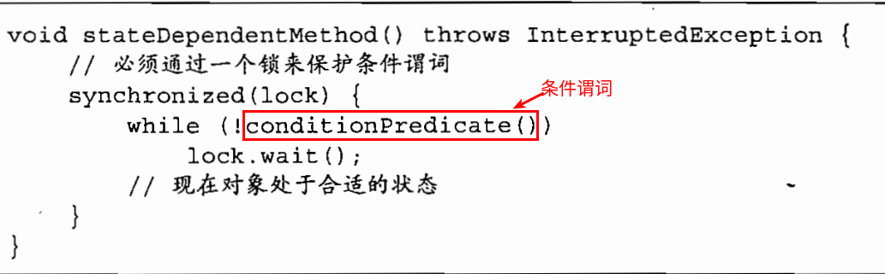
在条件队列 API 中有两个发出通知的方法，即 notify 和 notifyAll 。无论使用哪一个，都必须持有与条件队列对象相关联的锁。在调用 notify 时，JVM 会从这个条件队列上等待的多个线程中选择一个来唤醒, 而调用 notifyAll 时则会唤醒所有在这个条件队列上等待的线程。
Condition 对象内置条件队列存在一些缺陷:
一个 Condition 和一个 Lock 关联在一起，就好像一个条件队列和一个内置锁相关联一样。调用 Lock.newCondition 方法就能直接创建一个 Condition。
与内置对象不同，对于每一个 Lock，可以有任意数量的 Condition 对象。
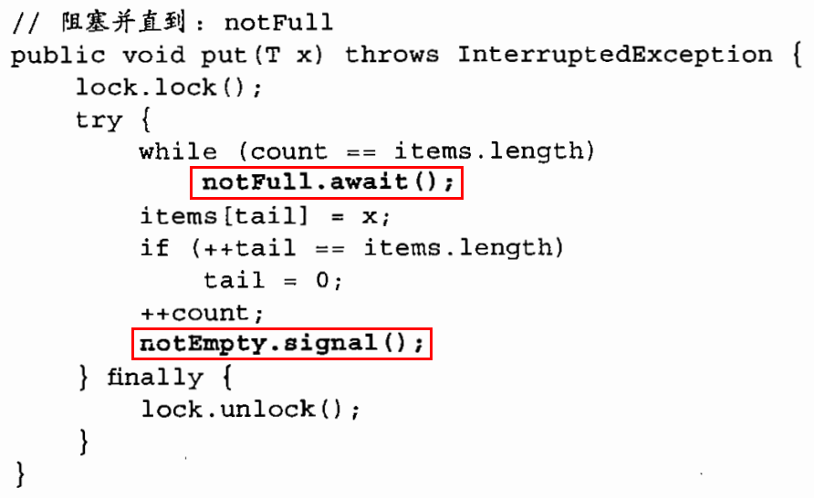